Introduction
When deriving a Visual Predictive Check (VPC) you must:
Have both observed and simulated datasets that include x and y variables, typically TIME and DV
Compute prediction intervals on simulated versus observed data
When deriving a VPC you may want to:
Stratify over variables in your model
Censor data below LLOQ
Perform prediction correction (pcVPC)
The tidyvpc package makes these steps fast and easy:
By providing readable syntax using the
%>%operator from magrittr.By using efficient backend computation, taking advantage of
data.tableparallelization.By providing traditional binning methods and new binless methods
By using ggplot2 graphics engine to visualize the results of the VPC.
This document introduces you to the tidyvpc set of
tools, and shows you how to apply them to tidyvpcobj to
derive VPC.
All of the tidyvpc functions require the
tidyvpcobj as the first argument, with the exception of the
first function observed() in the piping chain, which takes
a data.frame or data.table of the observed
dataset. Rather than forcing the user to either save intermediate
objects or nest functions, tidyvpc provides the
%>% operator from magrittr. The result from one step is
then “piped” into the next step, with the final function in the piping
chain always vpcstats(). You can use the pipe to rewrite
multiple operations that you can read left-to-right, top-to-bottom
(reading the pipe operator as “then”).
Data
To explore the functionality of tidyvpc, we’ll use an altered version
of obs_data(vpc::simple_data$obs) and
sim_data(vpc::simple_data$sim) from the vpc package. These
datasets contain all necessary variables to explore the functionality of
tidyvpc including:
DV (y variable)
TIME (x variable)
NTIME (nominal time for binning on x-variable)
GENDER (gender variable for stratification, “M”, “F”)
STUDY (study for stratification, “Study A”, “Study B”)
PRED (prediction variable for pcVPC)
MDV (Missing DV)
Data Structure
tidyvpc requires specific structure of observed and
simulated data to successfully generate VPC.
See tidyvpc::obs_data and tidyvpc::sim_data
for example data
structure.
obs_data <- data.table::as.data.table(tidyvpc::obs_data)
head(obs_data)
#> ID TIME DV AMT DOSE MDV NTIME GENDER STUDY
#> 1: 1 0.0000000 0.0 150 150 1 0.00 M Study A
#> 2: 1 0.2157624 37.3 0 150 0 0.25 M Study A
#> 3: 1 0.4694366 62.2 0 150 0 0.50 M Study A
#> 4: 1 0.8271844 74.1 0 150 0 1.00 M Study A
#> 5: 1 1.7724895 75.1 0 150 0 1.50 M Study A
#> 6: 1 1.7142415 58.3 0 150 0 2.00 M Study A
sim_data <- data.table::as.data.table(tidyvpc::sim_data)
head(sim_data)
#> ID REP TIME DV IPRED PRED AMT DOSE MDV NTIME
#> 1: 1 1 0.0000000 0.000 0.000 0.000 150 150 1 0.00
#> 2: 1 1 0.2157624 24.470 22.400 29.931 0 150 0 0.25
#> 3: 1 1 0.4694366 49.541 38.780 49.995 0 150 0 0.50
#> 4: 1 1 0.8271844 56.510 58.644 69.981 0 150 0 1.00
#> 5: 1 1 1.7724895 63.165 67.310 73.799 0 150 0 1.50
#> 6: 1 1 1.7142415 66.649 69.466 69.487 0 150 0 2.00Preprocessing data
First, we’ll need to subset our data by filtering
MDV == 0, which removes rows where both
DV == 0 and TIME == 0.
obs_data <- obs_data[MDV == 0]
sim_data <- sim_data[MDV == 0]Next, we’ll add the prediction variable from the first replicate of simulated data into our observed data.
obs_data$PRED <- sim_data[REP == 1, PRED]
observed()
The observed() function is always the first function
used in the VPC piping chain and is used to specify the observed dataset
and corresponding variables. There are three arguments that are required
to use observed. The first argument is either a
data.frame or data.table, the second argument
is the name of x-variable in the observed data, and the third argument
is the name of the y-variable. Note that variable names should be
unquoted.
simulated()
The simulated() function is used to specify the
simulated dataset and corresponding variables. There are two arguments
that are required in order to use simulated(). Since the
function is “piped” in after the observed() function, the
first argument is the tidyvpcobj and should not be included, followed by
the name of the simulated data, then the name of y-variable in the
simulated data. Variable names should be unquoted and x-variable should
not be included as it is recycled from the observed()
function.
binning()
The binning() function provides the binning method to
derive the VPC and should be inputted as a character string in the
bin argument. Binning methods include: “ntile”, “pam”,
“sd”, “equal”, “pretty”, “quantile”, “kmeans”, “jenks”, “centers”,
“breaks”. Some methods such as “ntile” and “pam” will require you to
specify the number of bins using the nbins argument (e.g.,
nbins = 9).
If using bin = "centers" or bin = "breaks,
you must also provide the centers/breaks argument as a numeric vector in
the function (e.g., centers = c(1,3,5,7)).
You can also bin directly on x-variable. If using this type of
binning, the bin argument should be the unquoted variable name that you
used in the observed() function (e.g.,
bin = NTIME for the Nominal Time variable in the data).
Binning on x-variable, NTIME
Binning with “ntile”
vpc <- observed(obs_data, x = TIME, y = DV) %>%
simulated(sim_data, y = DV) %>%
binning(bin = "ntile", nbins = 9)Binning with “breaks”
binless()
Note: The binless() examples below relate to a
continuous VPC. See examples
of binless() implementation for categorical VPC.
Binless methods for continuous VPC use Additive Quantile Regression
(AQR) in place of traditional binning. By default,
binless() performs AQR at the 5%, 50%, and 95% quantiles,
but you can change this using the qpred argument in
vpcstats(), which takes a numeric vector of length 3 (e.g.,
qpred = c(.1, .5, .9) for the 10%, 50%, 90%
quantiles).
The lambda smoothing parameters for each quantile are optimized by
default with AIC as indicated by the optimize = TRUE
argument. If you would like to use different lambda values for each
quantile set optimize = FALSE and specify lambda values for
each quantile as a numeric vector of length 3 with the
lambda argument (e.g., lambda = c(1,3,2)
corresponds to the lambda values for the quantiles in the
qpred argument (lower, median, upper)). Note: The higher
the lambda value the smoother the fit to the data.
Binless optimized
Binless with user-specified lambda values at 10%, 50%, 90% quantiles.
Set optimize = FALSE and provide lambda smoothing
parameters as a vector of length 3 for lower, median, upper
quantiles.
vpcstats()
The vpcstats() function is always the final function
used in the piping chain and calculates the statistics needed to plot a
VPC. If using binning()methods, you may specify alternative
quantiles using the qpred argument. The default quantiles
used are 5%, 50%, 95% (e.g.,
qpred = c(0.05, 0.5, 0.95)).
vpc <- observed(obs_data, x=TIME, y=DV) %>%
simulated(sim_data, y=DV) %>%
binning(bin = NTIME) %>%
vpcstats()
plot(vpc)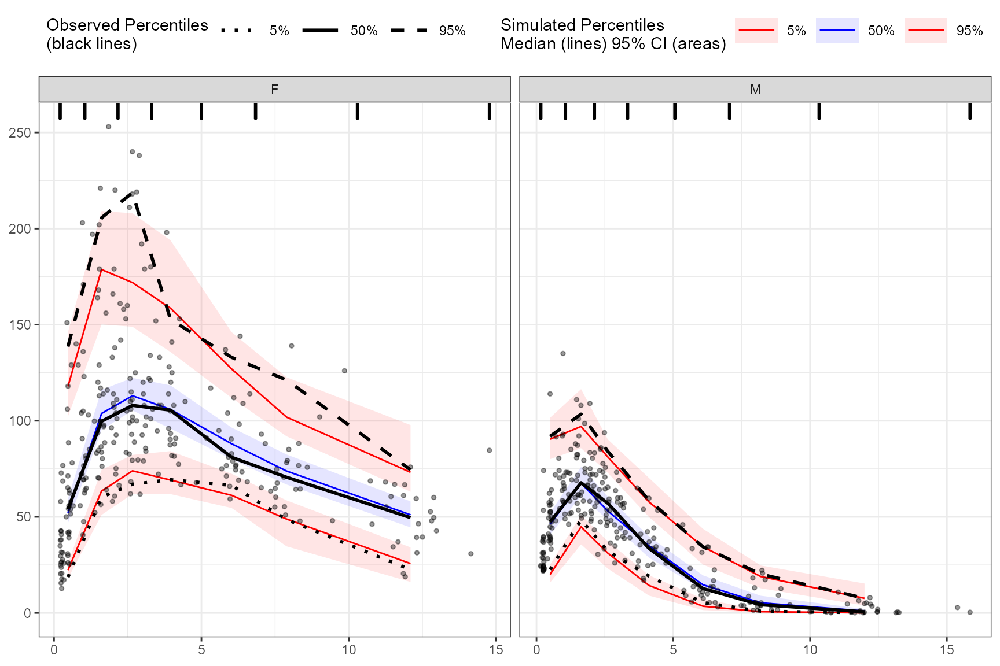
stratify()
To stratify VPC, include the stratify() function before
using the binning() or binless() function and
use the unquoted stratification variable(s) name as a formula. Let’s
stratify on GENDER in the data, which contains 2 levels
(GENDER = “M”, GENDER = “F”). Include as many stratification variables
as your model calls for.
vpc <- observed(obs_data, x=TIME, y=DV) %>%
simulated(sim_data, y=DV) %>%
stratify(~ GENDER) %>%
binning(bin = "pam", nbins = 7) %>%
vpcstats()
plot(vpc)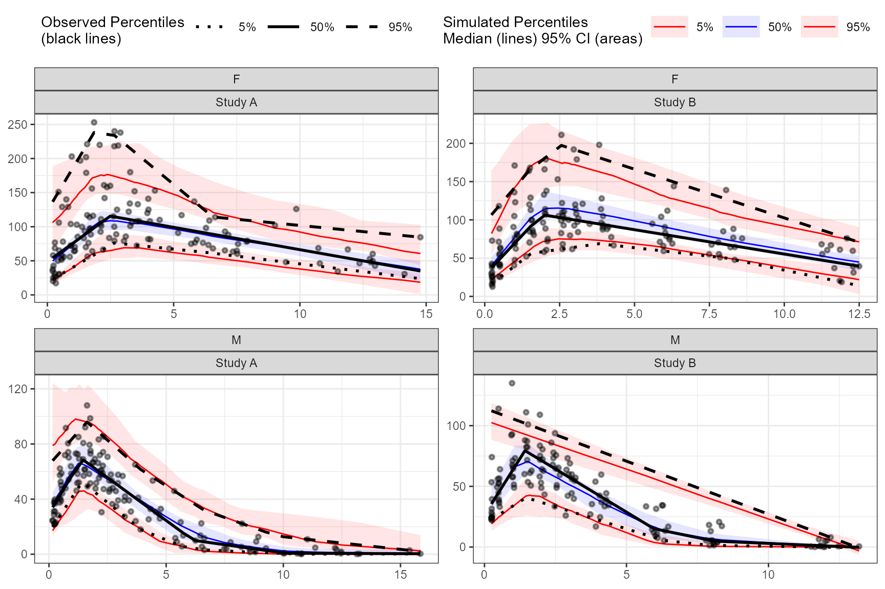
Using multiple stratification variables GENDER and
STUDY.
vpc <- observed(obs_data, x=TIME, y=DV) %>%
simulated(sim_data, y=DV) %>%
stratify(~ GENDER + STUDY) %>%
binless() %>%
vpcstats()
plot(vpc)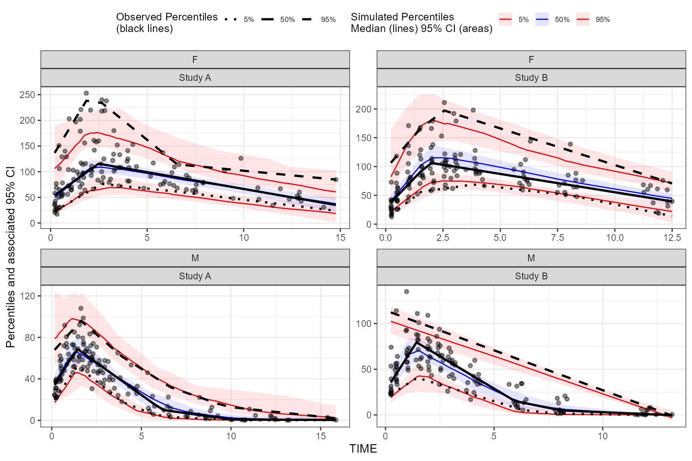
censoring()
Note: The censoring() function is only applicable
for continuous VPC.
To censor observed data below lower limit of quantification (LLOQ),
include the censoring() function after
simulated() and use the lloq argument to
specify either a variable in the data or specific value for censoring.
The blq argument creates a logical TRUE/FALSE in the data
that indicates whether the value is below the limit of quantification
and is typically defined as rows with DV < LLOQ in the data. Using
the censoring() function will censor only observed data
below lower limit of quantification when plotting, simulated data will
still be plotted.
Censoring using numeric value.
vpc <- observed(obs_data, x=TIME, y=DV) %>%
simulated(sim_data, y=DV) %>%
censoring(blq=(DV < 25), lloq=25) %>%
binning(bin = "jenks", nbins = 5) %>%
vpcstats()
plot(vpc, censoring.type = "blq")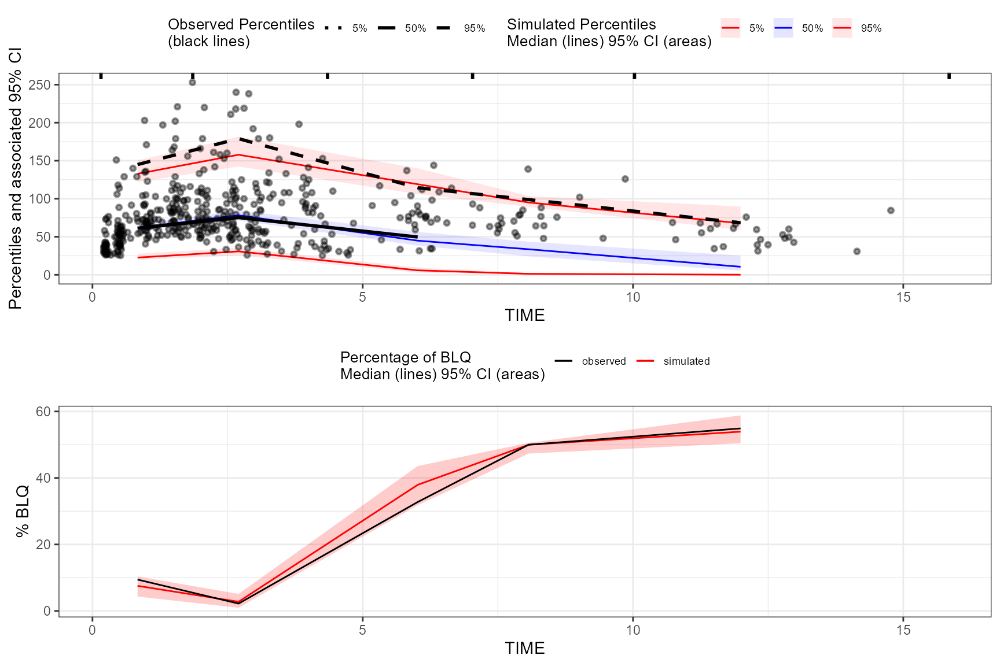
The tidyvpc package also allows you to use LLOQ values
within your data and different LLOQ for each level of stratification
variable. We’ll set an LLOQ value of 50 for
Study A and 25 for Study B and
calculate statistics at 10%, 50%, 90% quantiles.
obs_data$LLOQ <- obs_data[, ifelse(STUDY == "Study A", 50, 25)]
vpc <- observed(obs_data, x=TIME, y=DV) %>%
simulated(sim_data, y=DV) %>%
censoring(blq=(DV < LLOQ), lloq=LLOQ) %>%
stratify(~ STUDY) %>%
binning(bin = "pam", nbins = 4) %>%
vpcstats(qpred = c(0.1, 0.5, 0.9))
plot(vpc, censoring.type = "blq", facet.scales = "fixed")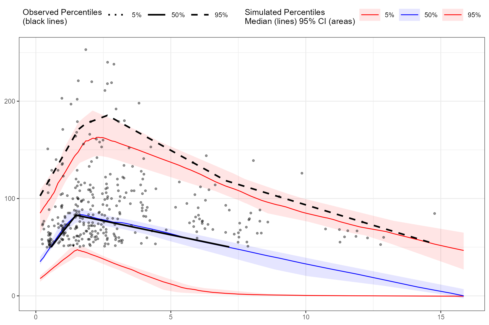
The tidyvpc package also supports usage of
censoring() with ALQ data, similar to above usage with BLQ
data.
obs_data$ULOQ <- obs_data[, ifelse(STUDY == "Study A", 125, 100)]
vpc <- observed(obs_data, x = TIME, y = DV) |>
simulated(sim_data, y = DV) |>
censoring(alq = DV > ULOQ, uloq = ULOQ) |>
stratify(~ STUDY) |>
binning(bin = NTIME) |>
vpcstats(qpred = c(0.1, 0.5, 0.9))To plot the above vpc and include the percentage of ALQ
plot, you’d run plot(vpc, censoring.type = "alq").
If using censoring() with both ALQ and BLQ data, set
censoring.type = "both" in the plot() function
to display both percentage of BLQ and ALQ plots as a grid in the
resulting VPC plot.
obs_data$LLOQ <- obs_data[, ifelse(STUDY == "Study A", 50, 25)]
obs_data$ULOQ <- obs_data[, ifelse(STUDY == "Study A", 125, 100)]
vpc <- observed(obs_data, x = TIME, y = DV) |>
simulated(sim_data, y = DV) |>
censoring(blq = DV < LLOQ, lloq = LLOQ, alq = DV > ULOQ, uloq = ULOQ) |>
stratify(~ STUDY) |>
binning(bin = NTIME) |>
vpcstats(qpred = c(0.1, 0.5, 0.9))
plot(vpc, censoring.type = "both", facet.scales = "fixed")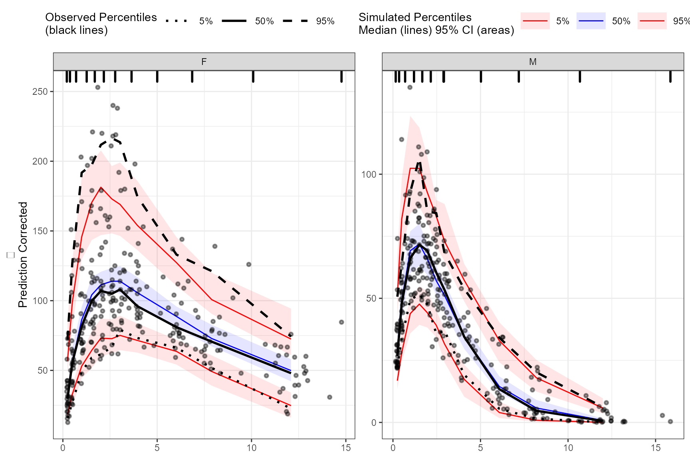
If you want to return the percentage of BLQ and/or ALQ plots
individually as elements in a list, instead of arranged in a grid, use
the censoring.output argument e.g.,
plot_list <- plot(vpc, censoring.type = "both", censoring.output = "list").
predcorrect()
Note: The predcorrect() function is only applicable
for continuous VPC.
To derive a prediction corrected VPC (pcVPC), use the
predcorrect() function. The predcorrect()
function requires the argument, pred, which should be the
unquoted variable name of the population prediction variable in the
data. The predcorrect() function may be called either
before or after specifying
binning()/binless(). If using the
binless() function with predcorrect(), LOESS
pcVPC will be performed.
Note: If the model was fit using log scale of DV, make sure to
include the argument log = TRUE in
predcorrect() to perform the appropriate prediction
correction calculation.
Prediction corrected using binning methods.
vpc <- observed(obs_data, x=TIME, y=DV) %>%
simulated(sim_data, y=DV) %>%
stratify(~GENDER) %>%
binning(bin = NTIME) %>%
predcorrect(pred=PRED) %>%
vpcstats()
plot(vpc)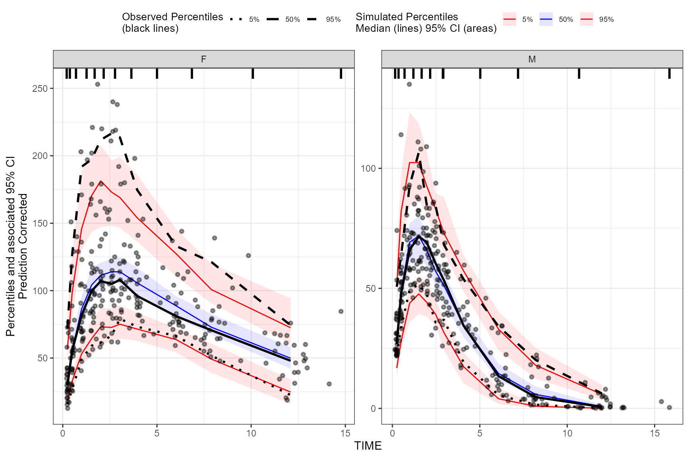
LOESS prediction corrected using binless method for 10%, 50%, 90%
quantiles. If optimize = TRUE, the LOESS smoothing
parameter, span, will be automatically optimized using AIC.
vpc <- observed(obs_data, x=TIME, y=DV) %>%
simulated(sim_data, y=DV) %>%
stratify(~GENDER) %>%
binless(qpred = c(0.1, 0.5, 0.9), optimize = TRUE) %>%
predcorrect(pred=PRED) %>%
vpcstats()
plot(vpc)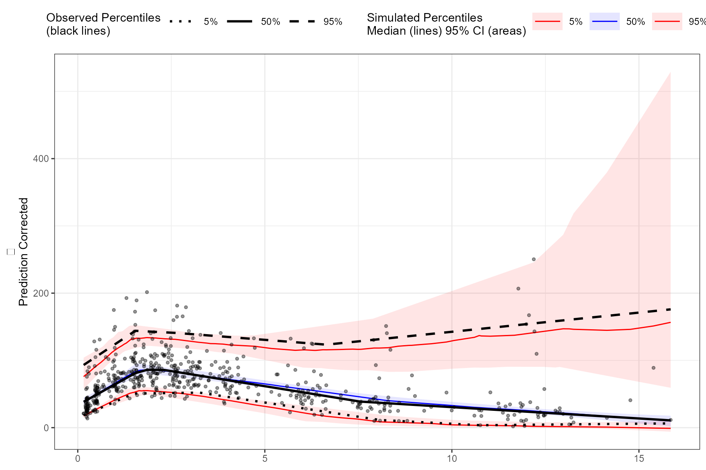
To specify your own smoothing value for LOESS pcVPC instead of
optimizing with AIC, use the span argument in the
binless() function. The span argument is a
numeric value between [0,1], with higher values providing a smoother
fit. Remember, to also include the smoothing parameters for AQR by using
the lambda argument and set
optimize = FALSE.
vpc <- observed(obs_data, x=TIME, y=DV) %>%
simulated(sim_data, y=DV) %>%
predcorrect(pred=PRED) %>%
binless(optimize = FALSE, lambda = c(.95,3,1.2), span = .6) %>%
vpcstats()
plot(vpc)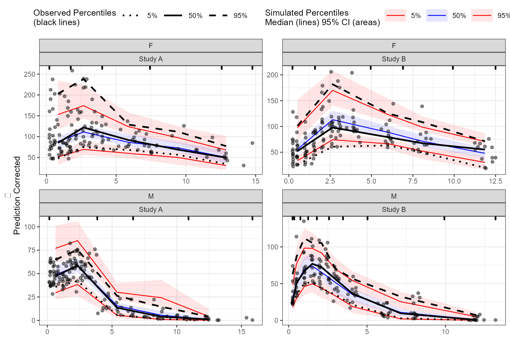
Extending further
Below are some examples of advanced use cases of the
tidyvpc package.
Different binning methods by strata
To use different binning methods for different stratification
variables, and/or for each level of stratification variable, use
multiple calls to the binning() function in combination
with the stratum argument. Make sure to set
by.strata = T
vpc <- observed(obs_data, x=TIME, y=DV) %>%
simulated(sim_data, y=DV) %>%
stratify(~ GENDER + STUDY) %>%
binning(stratum = list(GENDER = "M", STUDY = "Study A"), bin = "jenks", nbins = 5, by.strata = T) %>%
binning(stratum = list(GENDER = "F", STUDY = "Study A"), bin = "centers", centers = c(0.5,3,5,10,15), by.strata = T) %>%
binning(stratum = list(GENDER = "M", STUDY = "Study B"), bin = "kmeans", by.strata = T) %>%
binning(stratum = list(GENDER = "F", STUDY = "Study B"), bin = "pam", nbins = 5, by.strata = T) %>%
predcorrect(pred=PRED) %>%
vpcstats()
plot(vpc)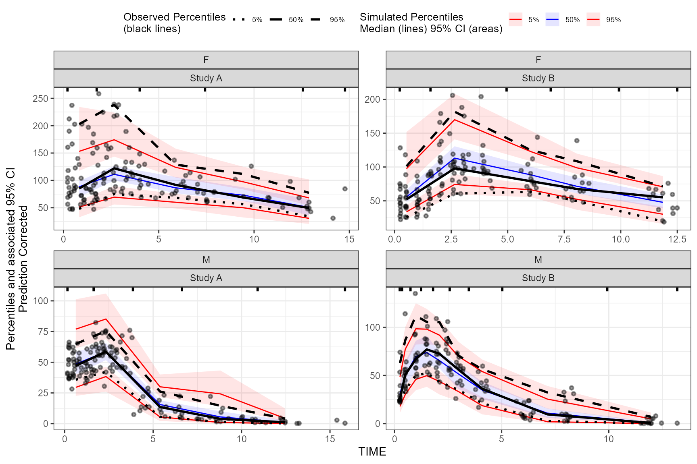
Different smoothing values for each level of stratification variable
To use different smoothing parameters for each level of
stratification variable if using the binless() function,
use a single call of the binless() function and include a
data.frame with the column names of stratification variable
and corresponding level. To use different span values for
each level of stratification variable, use a vector the length of n
levels of strata. Note: If using more than one stratification variable
with the binless() function, you must set
optimize = TRUE and optimize lambda and span using AIC.
user_lambda <- data.frame(GENDER_F = c(2,4,2), GENDER_M = c(1.9,3,2.25) )
vpc <- observed(obs_data, x=TIME, y=DV) %>%
simulated(sim_data, y=DV) %>%
stratify(~ GENDER) %>%
binless(optimize = FALSE, lambda = user_lambda, span = c(.6, .85)) %>%
predcorrect(pred=PRED) %>%
vpcstats(qpred = c(0.1, 0.5, 0.9))
plot(vpc)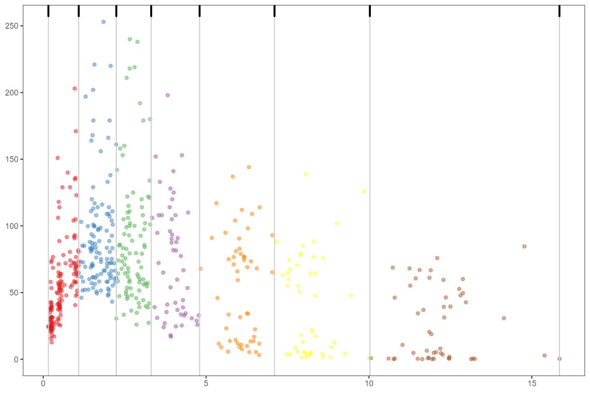
Visualize bins
If using binning() methods, you can visualize bins by
using the plot() function on the tidyvpcobj
without calling vpcstats(). Once you are satisfied with the
binning method, simply call vpcstats() on the existing
tidyvpcobj to compute VPC percentiles and prediction
intervals (e.g., vpc %>% vpcstats()).
vpc <- observed(obs_data, x=TIME, y=DV) %>%
simulated(sim_data, y=DV) %>%
binning(bin = "jenks", nbins = 7)
plot(vpc)
Obtain bin information
To obtain information about the bins, including the number of
observations, xmedian, xmean, xmin, xmax, xmidpoint, xleft, xright, and
xcenter, use the bininfo() function from
tidyvpc.
vpc <- observed(obs_data, x=TIME, y=DV) %>%
simulated(sim_data, y=DV) %>%
binning(bin = "jenks", nbins = 4) %>%
vpcstats()
bin_information <- bininfo(vpc)
head(bin_information)
#> bin nobs xmedian xmean xmin xmax xmid
#> 1: [0.158,1.89) 213 0.8418133 0.8717959 0.1575342 1.860852 1.009193
#> 2: [1.89,4.83) 187 2.8021930 2.9458444 1.8851078 4.772347 3.328727
#> 3: [4.83,9.45) 96 6.6279698 6.9869973 4.8283449 9.259398 7.043872
#> 4: [9.45,15.8] 54 11.9639045 12.0388598 9.4470340 15.848161 12.647597
#> xleft xright xcenter
#> 1: 0.1575342 1.872980 1.015257
#> 2: 1.8729798 4.800346 3.336663
#> 3: 4.8003458 9.353216 7.076781
#> 4: 9.3532162 15.848161 12.600688Using ggplot2 with tidyvpc
While the built-in plot() function make it easy to
quickly visualize the derived VPC, the tidyvpcobj can be
plotted using ggplot2 for complete plot customization.
Plot VPC with ggplot2
library(ggplot2)
obs_data$LLOQ <- obs_data[, ifelse(STUDY == "Study A", 50, 25)]
vpc <- observed(obs_data, x = TIME, y = DV) %>%
simulated(sim_data, y = DV) %>%
censoring(blq = DV < LLOQ, lloq = LLOQ) %>%
stratify(~STUDY) %>%
binning(bin = NTIME) %>%
vpcstats(qpred = c(0.1, 0.5, 0.9))
ggplot(vpc$stats, aes(x = xbin)) +
facet_grid(~STUDY, scales = "free", as.table = FALSE) +
geom_ribbon(aes(ymin = lo, ymax = hi, fill = qname, col = qname, group = qname),alpha = 0.1, col = NA) +
geom_line(aes(y = md, col = qname, group = qname)) +
geom_line(aes(y = y, linetype = qname), size = 1) +
geom_hline(data=unique(obs_data[, .(STUDY, LLOQ)]), aes(yintercept=LLOQ), linetype="dotted", size=1) +
geom_text(data = unique(vpc$data[, .(LLOQ), by = "STUDY"]),
aes(x = 10, y = LLOQ, label = paste("LLOQ", LLOQ, sep = "="), ), vjust = 1, hjust = 1) +
scale_colour_manual(name = "Simulated Percentiles\nMedian (lines) 95% CI (areas)",
breaks = c("q0.1", "q0.5", "q0.9"),
values = c("red", "blue", "red"),
labels = c("10%", "50%", "90%")) +
scale_fill_manual(name = "Simulated Percentiles\nMedian (lines) 95% CI (areas)",
breaks = c("q0.1", "q0.5", "q0.9"),
values = c("red", "blue", "red"),
labels = c("10%", "50%", "90%")) +
scale_linetype_manual(name = "Observed Percentiles\nMedian (lines) 95% CI (areas)",
breaks = c("q0.1", "q0.5", "q0.9"),
values = c("dotted", "solid", "dashed"),
labels = c("10%", "50%", "90%")) +
guides(fill = guide_legend(order = 2), colour = guide_legend(order = 2), linetype = guide_legend(order = 1)) +
theme(legend.position = "top", legend.key.width = grid::unit(1, "cm")) +
labs(x = "TIME", y = "Concentration") +
geom_point(data = vpc$obs, aes(x = x, y = y), size = 1, alpha = 0.1, show.legend = FALSE) +
geom_vline(data = bininfo(vpc)[, .(x = sort(unique(c(xleft, xright)))), by = names(vpc$strat)],aes(xintercept = x), size = rel(0.5), col = "gray80") +
theme(panel.grid = element_blank()) +
geom_rug(data = bininfo(vpc)[, .(x = sort(unique(c(xleft, xright)))), by = names(vpc$strat)],aes(x = x), sides = "t", size = 1)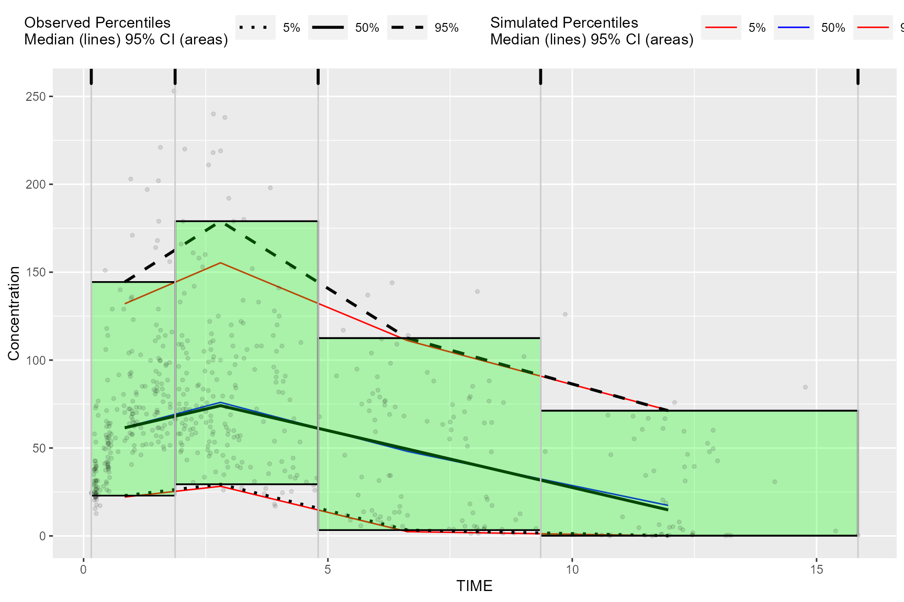
Plot rectangles using bininfo()
The results from bininfo() make it easy to plot a
rectangle VPC using ggplot2.
vpc <- observed(obs_data, x=TIME, y=DV) %>%
simulated(sim_data, y=DV) %>%
binning(bin = "jenks", nbins = 4) %>%
vpcstats()
#Get vpcstats df
stats <- vpc$stats
#Get bininfo df
bin_information <- bininfo(vpc)
#Left join bin_info to vpcstats on bin
bin_information <- stats[bin_information, on = "bin"]
#Generate ymin
bin_information <- bin_information[, ymin := min(y), by = "bin"]
#Generate ymax
bin_information <- bin_information[, ymax := max(y), by = "bin"]
head(bin_information)
#> bin xbin qname y lo md hi nobs
#> 1: [0.158,1.89) 0.8418133 q0.05 22.94 19.58905 22.7307 27.73307 213
#> 2: [0.158,1.89) 0.8418133 q0.5 61.50 57.45770 61.7670 67.05757 213
#> 3: [0.158,1.89) 0.8418133 q0.95 144.40 121.90995 132.7460 149.47290 213
#> 4: [1.89,4.83) 2.8021930 q0.05 29.38 21.34827 28.0135 32.11742 187
#> 5: [1.89,4.83) 2.8021930 q0.5 74.10 70.76337 76.1745 82.59877 187
#> 6: [1.89,4.83) 2.8021930 q0.95 179.00 141.91740 157.6140 181.46822 187
#> xmedian xmean xmin xmax xmid xleft xright xcenter
#> 1: 0.8418133 0.8717959 0.1575342 1.860852 1.009193 0.1575342 1.872980 1.015257
#> 2: 0.8418133 0.8717959 0.1575342 1.860852 1.009193 0.1575342 1.872980 1.015257
#> 3: 0.8418133 0.8717959 0.1575342 1.860852 1.009193 0.1575342 1.872980 1.015257
#> 4: 2.8021930 2.9458444 1.8851078 4.772347 3.328727 1.8729798 4.800346 3.336663
#> 5: 2.8021930 2.9458444 1.8851078 4.772347 3.328727 1.8729798 4.800346 3.336663
#> 6: 2.8021930 2.9458444 1.8851078 4.772347 3.328727 1.8729798 4.800346 3.336663
#> ymin ymax
#> 1: 22.94 144.4
#> 2: 22.94 144.4
#> 3: 22.94 144.4
#> 4: 29.38 179.0
#> 5: 29.38 179.0
#> 6: 29.38 179.0Plot rectangles using ymin and ymax, the
min/max y values in vpc$stats grouped by bin.
ggplot(bin_information, aes(x = xbin)) +
geom_line(aes(y = md, col = qname, group = qname)) +
geom_line(aes(y = y, linetype = qname), size = 1) +
geom_rect(aes(xmin= xleft,xmax= xright, ymin = ymin, ymax = ymax),alpha = .1, col = "black", fill = "green") +
geom_point(data = vpc$obs, aes(x = x, y = y), size = 1, alpha = 0.1, show.legend = FALSE) +
scale_colour_manual(name = "Simulated Percentiles\nMedian (lines) 95% CI (areas)",
breaks = c("q0.05", "q0.5", "q0.95"),
values = c("red", "blue", "red"),
labels = c("5%", "50%", "95%")) +
scale_linetype_manual(name = "Observed Percentiles\nMedian (lines) 95% CI (areas)",
breaks = c("q0.05", "q0.5", "q0.95"),
values = c("dotted", "solid", "dashed"),
labels = c("5%", "50%", "95%")) +
geom_vline(data = bin_information[, .(x = sort(unique(c(xleft, xright))))],aes(xintercept = x), size = rel(0.5), col = "gray80") +
geom_rug(data = bin_information[, .(x = sort(unique(c(xleft, xright))))],aes(x = x), sides = "t", size = 1) +
guides(fill = guide_legend(order = 2), colour = guide_legend(order = 2), linetype = guide_legend(order = 1)) +
theme(legend.position = "top", legend.key.width = grid::unit(1, "cm")) +
labs(x = "TIME", y = "Concentration")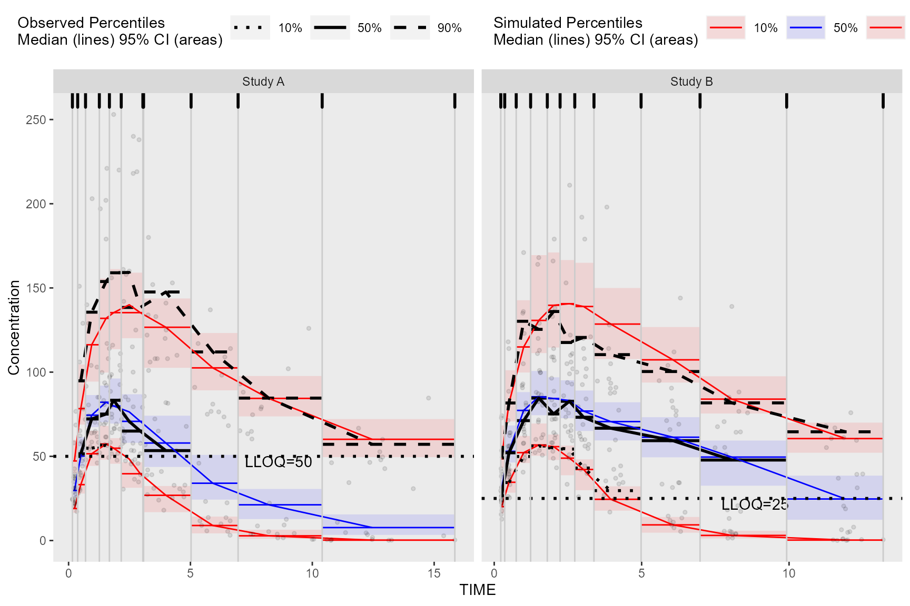
Alternatively, we can obtain the required data for plotting used in
the above bin_information data frame by merging
vpc$stats and bininfo(vpc) on bin
in the ggplot2 data argument. If stratifying, you will need
to include the name of the stratification variable(s) in the
data.table merge (e.g.,
vpc$stats[bininfo(vpc), on=c("STUDY", "bin")]). In the
rectangle VPC below, we will stratify on STUDY and plot
rectangles for each quantile.
obs_data$LLOQ <- obs_data[, ifelse(STUDY == "Study A", 50, 25)]
vpc <- observed(obs_data, x = TIME, y = DV) %>%
simulated(sim_data, y = DV) %>%
censoring(blq = DV < LLOQ, lloq = LLOQ) %>%
stratify(~STUDY) %>%
binning(bin = NTIME) %>%
vpcstats(qpred = c(0.1, 0.5, 0.9))
ggplot(vpc$stats[bininfo(vpc), on=c("STUDY", "bin")], aes(x = xbin)) +
facet_grid(~STUDY, scales = "free", as.table = FALSE) +
geom_rect(aes(xmin = xleft, xmax = xright, ymin = lo, ymax = hi, fill = qname, col = qname, group = qname),alpha = 0.1, col = NA) +
geom_segment(aes(x = xleft, xend = xright, y = md, yend = md, col = qname, group = qname)) +
geom_segment(aes(x = xleft, xend = xright, y = y, yend = y, linetype = qname), size = 1) +
geom_line(aes(y = md, col = qname, group = qname)) +
geom_line(aes(y = y, linetype = qname), size = 1) +
geom_hline(data=unique(obs_data[, .(STUDY, LLOQ)]), aes(yintercept=LLOQ), linetype="dotted", size=1) +
geom_text(data = unique(vpc$data[, .(LLOQ), by = "STUDY"]),
aes(x = 10, y = LLOQ, label = paste("LLOQ", LLOQ, sep = "="), ), vjust = 1, hjust = 1) +
scale_colour_manual(name = "Simulated Percentiles\nMedian (lines) 95% CI (areas)",
breaks = c("q0.1", "q0.5", "q0.9"),
values = c("red", "blue", "red"),
labels = c("10%", "50%", "90%")) +
scale_fill_manual(name = "Simulated Percentiles\nMedian (lines) 95% CI (areas)",
breaks = c("q0.1", "q0.5", "q0.9"),
values = c("red", "blue", "red"),
labels = c("10%", "50%", "90%")) +
scale_linetype_manual(name = "Observed Percentiles\nMedian (lines) 95% CI (areas)",
breaks = c("q0.1", "q0.5", "q0.9"),
values = c("dotted", "solid", "dashed"),
labels = c("10%", "50%", "90%")) +
guides(fill = guide_legend(order = 2), colour = guide_legend(order = 2), linetype = guide_legend(order = 1)) +
theme(legend.position = "top", legend.key.width = grid::unit(1, "cm")) +
labs(x = "TIME", y = "Concentration") +
geom_point(data = vpc$obs, aes(x = x, y = y), size = 1, alpha = 0.1, show.legend = FALSE) +
geom_vline(data = bininfo(vpc)[, .(x = sort(unique(c(xleft, xright)))), by = names(vpc$strat)],aes(xintercept = x), size = rel(0.5), col = "gray80") +
theme(panel.grid = element_blank()) +
geom_rug(data = bininfo(vpc)[, .(x = sort(unique(c(xleft, xright)))), by = names(vpc$strat)],aes(x = x), sides = "t", size = 1)
#> Warning: Removed 18 rows containing missing values (`geom_segment()`).
#> Warning: Removed 8 rows containing missing values (`geom_line()`).Plot Below Quantification Limit (BQL)
If using the censoring() function, the resulting
tidyvpcobj will also contain a pctblq table. Use
ggplot2 to plot the percentage of data below the limit of
quantification across bins.
We can include geom_ribbon() using the lo
and hi columns in the vpc$pctblq table to
denote the lower/upper bounds of our confidence interval. Let’s also
plot the median %blq of the simulated data using the md
column in the vpc$pctblq table.
obs_data$LLOQ <- obs_data[, ifelse(STUDY == "Study A", 50, 25)]
vpc <- observed(obs_data, x = TIME, y = DV) %>%
simulated(sim_data, y = DV) %>%
censoring(blq = DV < LLOQ, lloq = LLOQ) %>%
stratify(~STUDY) %>%
binning(bin = NTIME) %>%
vpcstats(qpred = c(0.1, 0.5, 0.9))
ggplot(vpc$pctblq) +
facet_grid(~STUDY) +
geom_ribbon(aes(x = xbin, ymin= lo, ymax = hi), fill = "red", alpha = .2) +
geom_line(aes(x = xbin, y = y)) +
geom_line(aes(x = xbin, y = md), color = "red") +
labs(x= "TIME", y= "% BLQ")